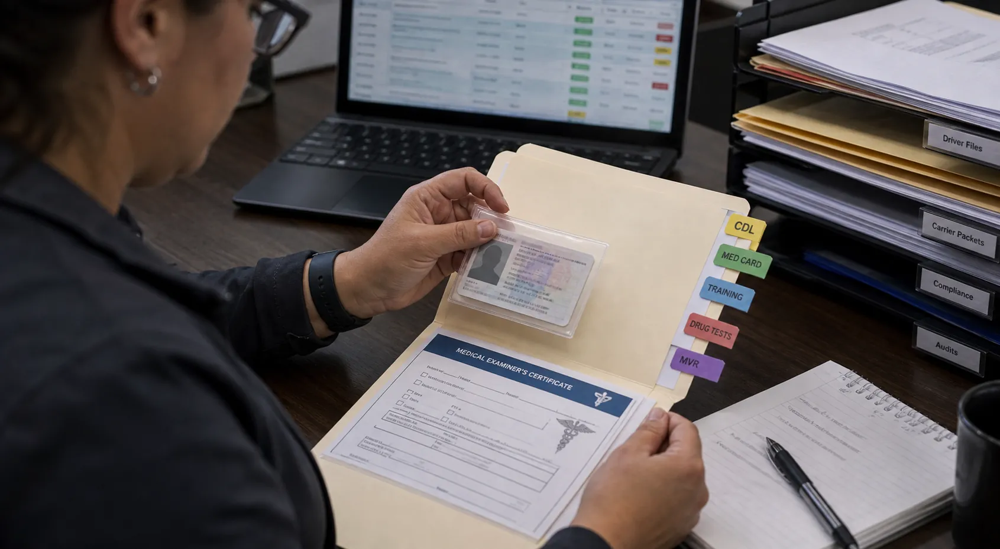

nonrefundable deposit secures onboarding capacity
Founding Fleet working session
Start the implementation conversation with the record that is slowing your fleet down.
Bring one readiness, document, or handoff problem. Together, we decide whether there is a concrete scope worth building around.
One real recordNamed ownersAn honest scope decision
BOF reviews records, tiers, access, and conversion effort
standard, enhanced, full conversion, or custom recovery path
Priority partner path
Early access starts with assessment, cleanup, and implementation planning.
Assessmentfleet profile, records, systems, tiersStart
Integration planstatic scope, access realities, conversion effortScope
Operational cleanupdocuments, drivers, settlement visibilityPlanned
Partner readiness
Take the BOF Fleet Assessment
BOF does not promise a result before the records are reviewed.
The implementation path stays credible by tying timing, fee range, and onboarding work to the actual fleet record condition.
What priority partners get
This is an implementation program, not a lifetime-discount offer.
Priority Fleet Implementation Partners get priority onboarding capacity, direct implementation planning, and a fleet-specific conversion assessment. Final implementation fees and monthly service fees are determined after BOF reviews actual records, requested tiers, operating complexity, system access, and signed scope.
Reservation deposit
Priority fleet partners pay a nonrefundable reservation deposit to secure onboarding capacity. The second implementation payment activates the formal onboarding phase.
Request reviewReadiness & Conversion Assessment
BOF reviews fleet size, requested Operations/HR/Finance support, document condition, current systems, access, and cleanup effort before quoting implementation.
Take the BOF Fleet AssessmentScope-based implementation fee
Implementation fees are based on actual conversion work. Clean operations-only fleets may move faster than fleets requesting Operations + HR + Finance.
See guidancePriority onboarding plan
Standard fleets may target 60-90 day onboarding after activation. Complex fleets may require 120-180 days or a custom timeline.
Try DemoBest-fit fleet
For-hire trucking fleets lead the priority implementation path.
BOF is built for operators who are tired of chasing driver readiness, BOL/POD packets, carrier status, release decisions, safety holds, settlement questions, and the follow-up trail that decides whether work can move.
- Dispatch needs to know what is cleared, blocked, or on watch
- Owners need record-backed visibility before release decisions
- Back-office work needs named owners instead of scattered reminders
- Driver and document packets need to be inspectable, not merely mentioned
Primary fit
For-hire fleets around 20-50 trucks with daily load movement, document pressure, driver-file readiness, carrier packet checks, and dispatch release questions.
Supported fit
Private, government, and contract fleets when the first issue is still record readiness, ownership, and audit-friendly follow-up.
Trial focus
One load, one driver file, one document packet, or one release decision your team already has to control.
Not a generic tour
The first conversation starts from records and consequences: owner, blocker, next action, and what happens if the record does not clear.
Implementation clock
The formal onboarding timeline does not start with the reservation deposit.
The reservation deposit secures BOF capacity. The formal implementation clock starts only after activation payment, readiness confirmation, completed intake, required documents and system access, signed implementation scope, and kickoff.
01
Reserve capacity
Submit the application and reservation deposit so BOF can protect implementation capacity while the assessment is completed.
Apply02
Complete readiness intake
Provide fleet profile, requested tiers, documents, current systems, access realities, and the biggest operational failures costing money.
Assessment03
Activate implementation
After BOF confirms readiness and scope, the activation payment starts the formal onboarding phase and kickoff timeline.
Pricing guidanceReadiness evidence
The assessment starts with the records BOF must convert.
Priority implementation planning can begin with driver files, insurance packets, POD/BOL proof, dispatch workflow, HR records, finance processes, and current system exports before any larger conversion timeline is promised.

Insurance packet review
Carrier and insurance records are checked before they affect release.
POD/BOL tabletop
Delivery proof should be visible enough to inspect, not just listed.
Load board office
The trial can map current load status to BOF readiness review.
Route board review
Workflow influence starts with the real records your team handles now.
A scope worth discussing
The first working session ends with clarity, not a generic promise.
BOF looks at the real record condition, the people who own the handoff, and the evidence that would make a next phase responsible to consider.
- Bring
- A record your team is already chasing.
- Map
- The owner, blocker, and next action.
- Decide
- Whether a defined implementation scope makes sense.